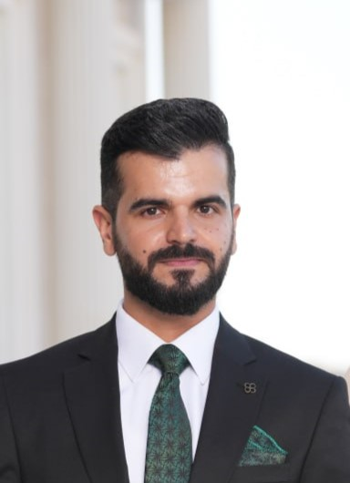

My Resume
HALWEST RASHID OTHMAN
Civil Engineer / Quality Control Engineer / Web Developer

Experience
23rd Feb-2019-To-Continue
KAR Company for Cement Industry
Qarachug Cement Plant
Erbil-Iraq
 Quality Control Engineer (Since 23rd Feb-2019-Continue)
Quality Control Engineer (Since 23rd Feb-2019-Continue)
25th July-2017-To-20th Feb-2019
Kosar Company Ltd. Erbil-Iraq
 Civil Site Engineer
Civil Site Engineer
January 2016 - June 2016
Biometric Payroll System of Kurdistan
 Data Entry
Data Entry
June 2013 - October 2016
Hivee Computer Center
 Showroom Sales Representative
Showroom Sales Representative
Education
-
B.Sc. in Civil Engineering at Tishk International University from Nov-2013 to Jul-2017
- English Preparatory at Tishk International University from Oct-2012 to Jun-2013
Trainings and Certificates
Computer and Software Skills
Microsoft Word
Microsoft Excel
Microsoft PowerPoint
Autodesk AutoCAD
Autodesk Revit
Adobe Photoshop
Adobe After Effect
Languages
Kurdish (Native)
English (Very Good)
Arabic (Excellent)
General Skills and Abilities
A hardworking, driven individual who is self-motivated and able to quickly learn new things.
Ability to handle work under pressure and effectively communicate ideas.
Open to feedback and can take constructive criticism.
Negotiation skills in thinking and innovation.
Self and Time management skill including well organizing tasks under stress.
Others
Contact Me